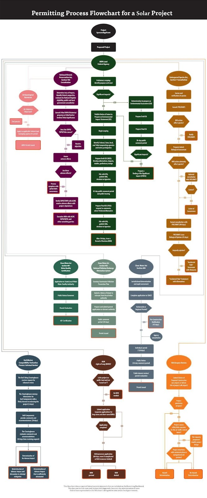

Can America Actually Build the $1 trillion-plus in Clean Energy and Infrastructure Projects Authorized by Washington?
By Lilah Connell — September 22, 2022

Late last year, Democrats and Republicans in Congress came together to pass the Infrastructure Investment and Jobs Act, which was the biggest federal public works bill in six decades. And recently President Biden signed into law the Inflation Reduction Act (IRA), passed with only Democratic votes, that authorizes $370 billion in clean energy investment over the next decade.
Now comes the hard part. Can America actually build the roads, bridges, transit, power lines, solar arrays, and other infrastructure these bills authorize? Even if we are able to build, will these much-needed projects end up millions over cost and decades delayed?
Before agreeing to cast the deciding vote to pass the IRA, Democratic Senator Joe Manchin got Democratic House and Senate leadership to agree to hold a vote this fall on streamlining the federal permitting process. Earlier this month, Senate Majority Leader Chuck Schumer pledged to include permitting reform in a larger authorization bill Congress must pass this month to keep the government funded. On September 21, Manchin released the draft text of his permitting reform proposal and no one seems happy.
As The New York Times reported, “lawmakers in both parties are balking over a deal they insist they were never a part of, prompting a dispute that threatens to derail a government spending bill that must pass by next weekend to stave off a shutdown.”
Even before Manchin released his proposal, 72 House Democrats had expressed their opposition to including the permitting reforms in the funding bill in a letter to Speaker Nancy Pelosi and House Majority Leader Steny Hoyer, implying the move could risk a government shutdown. Republicans – resentful of the IRA’s passage and Democrats’ political maneuvering – are also not guaranteed to support such legislation. On September 12, West Virginia Republican Senator Shelley Moore Capito introduced her own permitting reform bill with 38 Senate Republican co-sponsors, but given this bill lacks any current Democratic support, this is a bill more designed to send a message than to become law.
It isn’t yet clear if a robust permitting reform measure can pass. But it is clear that it should. If it doesn’t, Americans could find many of these new infrastructure and energy projects tangled up in red tape for years.
It’s no secret America’s infrastructure planning and approval system is highly inefficient. Major projects in the U.S. rarely get completed on schedule and within budget. Consider California’s high-speed rail system approved by voters in 2008 to link Los Angeles and San Francisco. Initial estimates priced the project at $33 billion and estimated completion by 2020. Fast forward to today, the new estimate sits at $105 billion with a 2033 completion date. Beyond funding setbacks, the project has faced challenges including land acquisition, environmental litigation, permit delays, employee turnover, design adjustments, and political obstacles. In addition to disagreement among state leaders on how and where to allocate funding, in 2019 President Trump called the project a “green disaster” and revoked $929 million of its grant funding. This grant funding was subsequently restored by the Biden administration.
New York City’s East Side Access extension of the Long Island Rail Road faced similar delays. The project was supposed to be finished 11 years ago at a cost of $2.2 billion. Now it’s expected to cost $12 billion – or $3.5 billion per mile – when it’s finished this year. U.S. rail transit projects are estimated to cost 50% more per mile than in Europe and Canada (or 250% more when including New York), while construction on average takes 6 months to 1.5 years longer. By comparison, an underground Metro Line in Toulouse, France cost $176 million per mile.
There are many reasons why it’s hard to build things in America; a web of rules, regulations, and governing bodies – at the national and local level – are often redundant, sometimes contradict one another, and don’t include clear lines of authority. Processes for public input and lengthy litigation means it is not unusual in the U.S. for a project’s permitting to take significantly longer than the time it takes to actually build the infrastructure. The Permitting Institute, a nonprofit advocating for “removing red tape” in the infrastructure permitting process, crafted a flowchart detailing the types of considerations and barriers a solar power project may face in the permitting process (see below).
Most of the new infrastructure and clean energy projects recently authorized by Congress will be subject to intense regulatory scrutiny and environmental review under the National Environmental Protection Act (NEPA). The law requires federal agencies to coordinate to prepare an Environmental Impact Statement (EIS) and circulate a draft to relevant agencies, the public, and the Environmental Protection Agency. After a 45-60 day public comments period, a final EIS addressing any issues raised is published for a minimum 30 day review period. Finally, the lead agency, with final decision making authority, publishes a Record of Decision explaining their decision and identifying the alternatives considered.
NEPA was enacted in 1970 after passing Congress with overwhelming bipartisan support. It was a landmark reform intended to promote informed government decision-making and create community safeguards by encouraging citizen involvement in the project review process, thereby increasing government transparency and accountability. NEPA’s enactment followed several high-profile environmental disasters in 1969, including a crude oil spill in the Santa Barbara Channel and the Cuyahoga River Fire caused by industrial pollution. The public was clamoring for higher environmental standards as the government undertook some of the most ambitious infrastructure projects in the nation’s history.
According to the nonprofit Common Good, when NEPA was created, government was smaller and less sprawling, and generally the review process could be completed within months or a year of the initial proposal. At the same time, environmental impact statements (EIS) were typically a few hundred pages. Fifty years later, the average review process takes 4.5 years and a typical EIS runs 661 pages. This level of scrutiny comes at a high cost – delays drive up a project’s financing costs, create prolonged inefficiencies, and signal a failure of government to provide necessary public goods. Not to mention the opportunity costs of wasted federal funds that could have flowed to other government programs.
NEPA’s public comments provisions have empowered local communities and organized interests to often block important and broadly popular infrastructure projects for almost any reason. A 2022 study by MIT professors that examined 53 utility-scale alternative energy projects that were either delayed or terminated between 2008 and 2021 found that the most common source of local opposition was concern about land value and the project’s impact on aesthetics, recreation, or other community uses (62%). This was followed by environmental impact (60%), health and safety (28%), unfair public participation processes (28%), failure to protect tribal rights (23%), challenges to project financing (21%), and intergovernmental disputes (21%). In 80% of cases, there were multiple sources of opposition at play. Further, the study found “no evidence that project developers found a way to work constructively with opposing groups,” indicating many paused or delayed projects fail to ever move forward.
Unfortunately, significantly reforming NEPA has been a red line for most Democrats. Many maintain that strict, broad NEPA provisions actually prevent litigation, reasoning that it’s better to have broad stakeholder buy-in before construction begins instead of having litigation hold it up after it has started. In the words of Brenda Mallory, the Council on Environmental Quality (CEQ) Chair appointed under President Biden, NEPA’s community safeguards “provide regulatory certainty, reduce conflict, and help ensure that projects get built right the first time.”
For their part, Republicans have been seeking ways to reform or, in some cases, radically overhaul NEPA for years. In 2020, 130 House Republicans signed a letter addressed to then-Chairman of the CEQ Mary B. Neumayr calling for NEPA modernization, claiming that NEPA has strayed from its original objectives, and stating: “Now, unending litigation and mountains of paperwork define a permitting process that stretches along an indefinite timeline.” One of the signers, Washington Representative Dan Newhouse, believes NEPA “exemplifies bureaucratic red tape,” and claims: “Our constituents cannot afford these delays when trying to renew, maintain, or develop critical infrastructure projects across the country.”